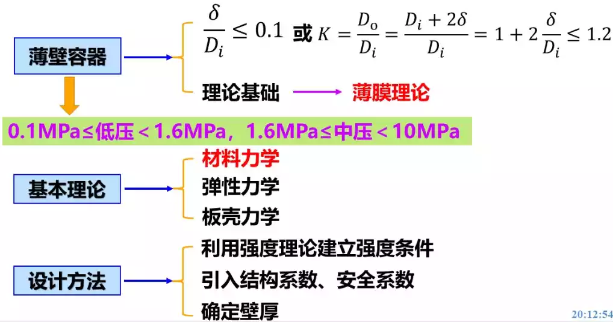

文章大纲
第一节 回转壳体的应力分析——薄膜理论
1. 薄壁容器设计思路

①段：受压前后经线仍近似保持直线，这部分只承受拉应力，称为薄膜应力，没有弯曲应力。
②③段：由于筒体与封头的变形不同，其中筒体变形大于封头的变形，因此在这种连接处形成了一种相互约束，从而导致在附近产生附加的弯曲应力，称为边缘应力。


2. 内压圆筒薄膜应力的计算
环向应力
内压圆筒环向应力\(\sigma _ { \theta } = \dfrac { P D } { 2 \delta } = \dfrac { P } { 2 ( \frac { \delta } { D } ) }\)
环向应力作用于筒体的纵截面上，方向为切线方向，每一点环向应力的方向不同。
经向应力
内压圆筒经向应力\(\sigma _ { m } = \dfrac { P D } { 4 \delta } = \dfrac { P } { 4 ( \frac { \delta } { D } ) }\)
经向应力作用于筒体的横截面上，方向平行于筒体的轴线。
课堂习题

厚径比
\(δ/D\)（厚径比）体现着圆筒承压能力的高低，\(δ/D\)越大，圆筒承压能力越强。因此，看一个圆筒能耐多大的压力，不能光看它的壁厚大小。
\(D\) - 平均直径，\(D=D_o-\delta\)
3. 回转体
母线
转壳体中间面的那条直线。
如图所示的回转壳体即由平面曲线\(AB\)绕\(OA\)轴旋转一周形成，平面曲线\(AB\)为该回转体的母线。
母线形状不同或与回转相对位置不同时, 所形成回转壳体形状不同。
经线
通过回转轴的平面与中间面的交线，
如\(AB’\)，\(AB”\)。
经线与母线形状完全相同
法线
过中间面上的点M且垂直于中间面的直线n称为中间面在该点的法线。
(法线的延长线必与回转轴相交)

纬线
以法线NK为母线绕回转轴OA回转一周所形成的圆推法截面与中间面的交线CND圆。
平行圆：垂直于回转轴的平面与中间面的交线称平行圆。显然，平行圆即纬线。
曲率半径
课堂习题

无穷大，0.5m
第一曲率半径\(R_1\)：经线的曲率半径；
第二曲率半径\(R_2\)：经线到回转轴的距离。

\(R_2=a\)
4. 任意回转体薄膜应力的计算
区域平衡方程
\[ \sigma _ { m } = \dfrac { P R _ { 2 } } { 2 \delta } \]
这个公式是计算承受气体内压的回转体在任意纬线上经向应力的一般公式。
经向应力产生在经线方向，作用在圆锥面与壳体相割所形成的锥截面上。不同纬线上各点的经向应力不同，而同一纬线上的经向应力相等。
微体平衡方程式
\[ \dfrac { P } { \delta } = \dfrac { \sigma _ { m } } { R _ { 1 } } + \dfrac { \sigma _ { \theta } } { R _ { 2 } } \]
这个公式是计算承受气体内压的回转体环向应力的一般公式。
环向应力产生在纬线方向，作用在经线平面与壳体相割所形成的纵向截面上。
第二节 薄膜理论的应用
1. 受气体内压的圆筒形壳体
\(R _ { 1 } = \infty\)
\(\sigma _ { m } = \dfrac { P R _ { 2 } } { 2 \delta } = \dfrac { P D } { 4 \delta }\)
\(R _ { 2 } = \dfrac { D } { 2 }\)
\(\sigma _ { \theta } = \dfrac { P D } { 2 \delta }\)
2. 受气体内压的球形壳体
\(R _ { 1 } = R _ { 2 } = R = \dfrac { D } { 2 } \\ \sigma _ { m } = \sigma _ { \theta } = \dfrac { P R _ { 2 } } { 2 \delta } = \dfrac { P D } { 4 \delta }\)
- 球壳上各点的应力相同。
- 球壳的经向应力和环向应力在数值上相等。
- 球壳的环向应力比同直径、同壁厚的圆筒小一半，这是球壳显著的特点。

3. 受气体内压的椭球壳（椭圆形封头）
\(x=0\)处，
\(\sigma _ { m } = \sigma _ { \theta } = \dfrac { P a } { 2 \delta } ( \dfrac { a } { b } )\)
\(x=a\)处，
\(\sigma _ { m } =\dfrac { P a } { 2 \delta }\)
\(\sigma _ { \theta } = \dfrac { P a } { 2 \delta } ( 2 - \dfrac { a ^ { 2 } } { b ^ { 2 } } )\)

4. 受气体内压的锥形壳体
\(R _ { 1 } = \infty\)
\(R _ { 2 } = \dfrac { r } { \cos \alpha }\)
\(\sigma _ { m } = \dfrac { P r } { 2 \delta \cos \alpha }\)
\(\sigma _ { \theta } = \dfrac { P r } { \delta \cos \alpha }\)

在锥形壳体大端\(r=R\)时，应力最大，在锥顶处，应力为零。因此，一般在锥顶开孔。
5. 受气体内压的碟形封头

6. 受液体静压作用的圆筒壳


课堂习题


第三节 内压圆筒边缘应力
- 薄膜应力：由载荷所引起的，并随着载荷的增大而增大直至破裂，也称为一次应力。
- 边缘应力：是由于相互联结的两个零件各自所欲发生的变形受到对方的限制而引起的，也称为二次应力。
1. 圆筒与平板封头的边缘应力问题
什么是边缘应力
当圆筒受到内压时，圆筒半径增大，而平板封头只发生弯曲变形，直径却不会增大；由于筒体与封头又连在一起，所以二者的变形将相互受到对方的限制；这种相互约束必导致产生一组大小相等、方向相反的内力，由这组内力所产生的应力就是边缘应力。
 \[ ⁍ \]
\[ ⁍ \]
2. 圆筒与球形封头的边缘应力问题
什么是二次压缩薄膜应力
受到内压时，若二者互不干扰，筒体的半径增量将大于球形封头的半径增量，但由于二者连在一起，它们只能产生相同的半径的增量，这样，相当于封头受到了二次拉伸薄膜应力，筒体受到了二次压缩薄膜应力。

- 球形封头的一次薄膜应力本来就只有筒体的一半，就算加上二次应力，关系不是很大。
- 筒体的二次压应力与一次应力叠加后，总应力反而减少了，平衡更没问题。
3. 圆边缘应力的特点
局部性
不同性质的联接边缘产生不同的边缘应力，但它们大多数都有明显的衰减波特性，随着离开边缘的距离增大，边缘应力迅速衰减。
自限性
由于边缘应力是两联接件弹性变形不一致，相互制约而产生的，一旦材料产生了塑性变形，弹性变形的约束就会缓解，边缘应力自动受到限制，这就是边缘应力的自限性。
4. 对边缘应力的处理
- 局部处理
- 选用塑性较好的材料
- 由于自限性，其危害小于薄膜应力。


发表您的看法